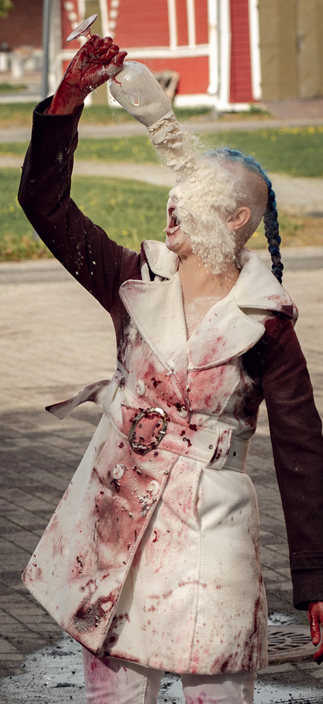

OLGA PROKHOROVA
JUOPPO JOOGAA
A series of 30 independent performances across different areas of Oulu, including places commonly frequented by people with addictions. A pink figure performs yoga routines on the sidewalks, holding a bottle in different asanas.
Oulu, Finland 2026
Each performance is a 20-minute session

AS ATTACHMENT
A durational performance of wearing a wedding dress while chained to a fence next to love locks. Eventually, the performer begins conversations with passersby about the nature of love, attachment, and the hardships of relationships.
Joensuu, Finland 2021
Duration 4 hours

WEARING BURDEN
How does it feel to lose your restrictions?
The performer wears 20 kilos of black dough around the city. Eventually, the burden is gradually released by pinching off small pieces, experiencing how the body adapts to freedom and how it feels to let go.
Joensuu, Finland 2021
Duration 2 hours

COUNTING DAYS
An anti-war performance series presented in Mexico and Finland. The performer falls and rises as many times as the number of days the Russian war against Ukraine has lasted. Later, the action turns into cutting holes in the coat, reaching day 730.
The project was paused after two years. Unfortunately, the war keeps going into its fifth year.
Mexico–Finland 2022
Duration 2 years

BOTTOM OF BLOOD
Tasting berries and blood with the audience in a park.
A poetic performance-exploration.
Joensuu, Finland 2021
Duration 30 minutes

OPPOSITE CATHERINE
A long-durational exploration of bodily and behavioural creativity. The performer is positioned backwards, using the body's peripheral side as the frontal.
“We are crazy about food and food ideologies. About food rituals. About food information. We have plans for eating better. Or eating less...”
The performer brings only mud into the kitchen space. Plenty of mud.
Oulu, Finland 2016
Duration 5 hours

ABUNDANCE
The performer makes interventions in the city space and plants about 50 sausages on the lawn. Each of them is carved into “a penis shape”.
The newly created sight is offered to citizens to observe the abundance of Nature. There one can think about beauty, forgiveness, joy, acceptance, polarities, or even death, aggression, occupation, and inequality.
Joensuu, Finland 2021, Night of Arts
Duration 1 hour 20 minutes

IN LOVE WITH THE BUS STOP
An action of covering a distant bus stop with a pattern of lipstick stamps. The performer remains there, watching passing cars and buses, while going nowhere.
A simple gesture of affection turns an ordinary public place into a strange, intimate meeting point.
Joensuu, Finland 2022
Duration 1 hour

NEVER-LOST IN KUHASALO
The performer walks barefoot and blindfolded along a newly built road into the wild nature, over 2 km long.
The performance questions the idea of making the forest easy and accessible. With vision dramatically reduced, the body becomes dependent on touch, sound, and smell. The new road makes it impossible to get lost — but perhaps a forest is not supposed to be so easy to navigate.
Joensuu, Finland 2021
Duration 1 hour 30 minutes

STRESS OR MISTRESS
The performer is drumming on a bag of flour in the city centre.
The Action is a response to the public bullying of Finland's prime minister Sanna Marin following criticism of her dancing and rumours about cocaine use. In Finnish slang, “jauho” means flour and “jauhojengi” means flour people.
The performer creates noise and opposes herself to the bullies. Covered in flour, she explores the dance movements that were publicly criticized.
Oulu, Finland 2022
Duration 20 minutes